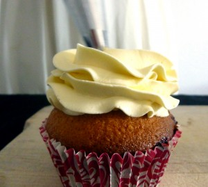
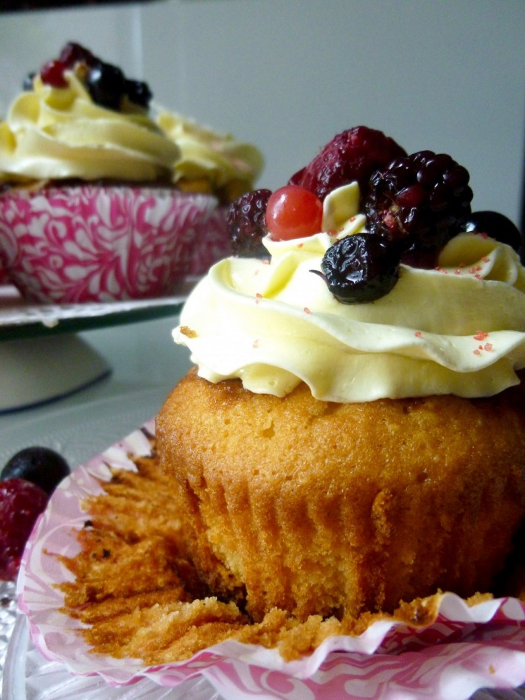

Cupcake fourrés à la confiture de fruits rouges

Coucou tout le monde! Comme promis voici la recette de mes cupcakes à la confiture de fruits rouges glacés à la crème au beurre à la meringue Suisse!
Vous l’aurez compris je suis totalement cupcake-addict^^ Je trouve ces petits gâteaux si beaux et si bons 🙂 Aujourd’hui, je vous propose une recette dont les enfants raffolent! (et les grands aussi) Il s’agit de la recette des cupcakes fourrés à la confiture! Vous pouvez aussi adapter la recette selon vos goûts et remplacer la confiture par du nutella, de la pâte aux spéculos etc..
Je vous laisse découvrir la recette et j’espère qu’elle vous plaira!!
Ingrédients
- Oeufs - 3
- Sucre - 160 g
- Farine - 180g
- Amande en poudre - 130g
- Levure chimique - 6g (1/2 sachet)
- Beurre mou - 150g
- Confiture - 1 pot
- Blancs d'oeufs à temp ambiante - 4
- Sucre - 130g
- Beurre à temp ambiante - 230g
- Sel - 1 pincée
Instructions
- Dans un récipient mélanger la farine, la poudre d'amande et la levure
- Dans une jatte ou dans le bol de votre robot, fouetter le beurre mou avec le sucre
- Ajouter les œufs un par un tout en continuant à remuer
- Verser petit à petit les aliments secs (farine-amande en poudre et levure)
- Ajouter l'extrait de vanille
- Continuer de remuer jusqu'à obtenir un mélange homogène Si vous le souhaitez vous pouvez ajouter du colorant alimentaire
- Préchauffer le four à 180°
- Placer vos caissettes dans un moule à cupcakes
- Verser la moitié de la pâte à cupcakes dans chaque caissette
- Ajouter de la confiture et recouvrir du reste de la pâte à cupcakes jusqu'aux 3/4 des caissettes
- Enfourner à 180° pendant 20min
- Laisser bien refroidir les cupcakes avant de les glacer


Les tips de la communauté
Cupcakes magnifiques et délicieux avec une crème légère et aérée. La crème au beurre meringue suisse se révèle plus légère que les glaçages classiques au beurre.
Astuces
- La crème est très légère et aérée malgré le beurre
- Recette fournie pour approximativement une douzaine de cupcakes standard
Variantes suggérées
- Adapter les garnitures internes selon goût (autres fruits rouges, etc.)